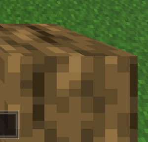
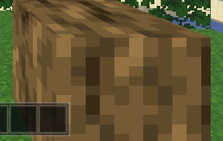
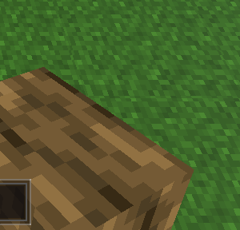
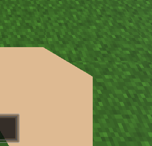
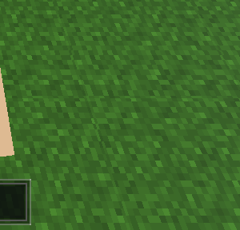
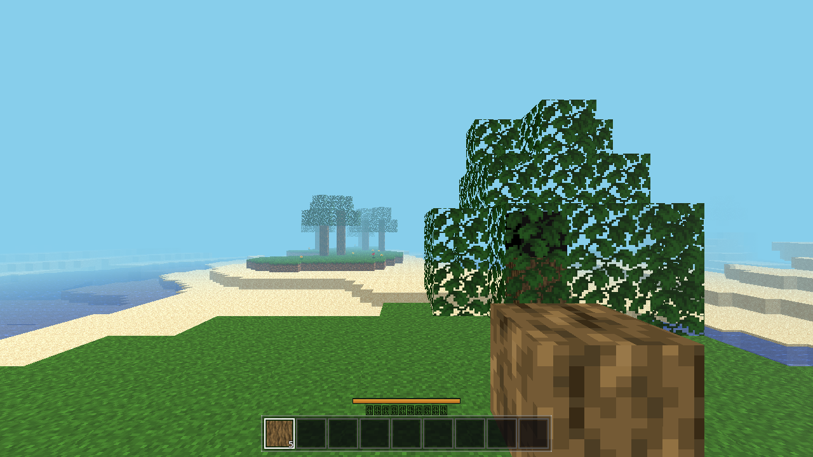
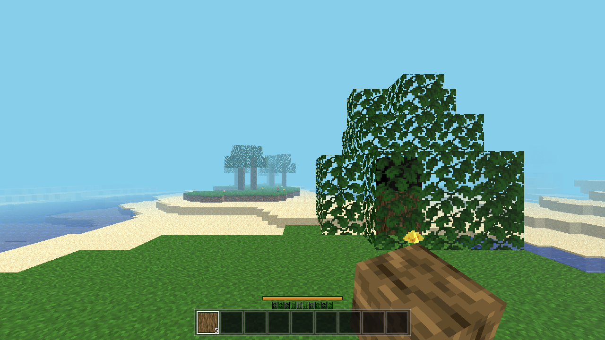

desktop_idle_log_zoom.png — oak log (block 6) held idle: crisp 1:1 32px bark pixels, no soft edge
@keyframes, no transform animation on any held element).image-rendering:pixelated, follows the mouse at +14px) shown only while dragging an item in the inventory UI (updateHeldEl() L1965, mouse L1995). It is not the selected hotbar item and it never animates.mousedown L1617-1618: attackMob / mining=true) has no visual feedback at all.Per spec: port what's there (there is nothing to port for viewmodel/swing) → added a Godot-native MC-style held item (already present as a near-camera viewmodel in player.gd: atlas-tile box for blocks, tinted sprite for items, now a fist for the empty hand) + swing on mine/attack, punch for empty hand. Render-only; M7a/M9 logic untouched.
Godot 4.7 Texture2D has no per-texture filter (probed); 3D sampling comes from BaseMaterial3D.texture_filter whose default is 3 = LINEAR_WITH_MIPMAPS — the held box used exactly that default → bilinear + mip bleed on the 32px tile. Fix: explicit BaseMaterial3D.TEXTURE_FILTER_NEAREST (no mip bleed) on the held-block material and Sprite3D.texture_filter on the held-item sprite. Sharpness metric (idle log crop): interior of texture-pixels flat (|dpx| p90 = 0), sharp steps only at pixel boundaries (p99 = 23, max 54) — crisply blocky.
godot/player/player.gd hand_root pivot + held_fist; swing state (0.4s single-shot, item dip/rotate vs empty-hand jab);
start_mine() triggers swing (attack path too); NEAREST filter on held mat + sprite;
swing()/start_swing()/hold_swing()/clear_swing()/swing_frac()/swing_active(); debug keys H/J/K
godot/autoload/debug.gd Debug.swing(frac,kind) / Debug.swing_clear() / Debug.swing_read()
godot/scenes/main.gd AWECRAFT_LOGIC=swing headless test; AWECRAFT_SWING + AWECRAFT_EMPTYHAND snapshot hooks;
AWECRAFT_FPV_ITEM now grants the item if absent
godot/ (rebuilt) web/ via ./build_web.sh (exit 0)
| run | RESULT (abridged) |
|---|---|
--quit | default logic check, 0 errors |
| swing (new) | ok:true box_visible, fist hidden w/ item, saw_mid_swing, settled to base pose, fist on empty hand, punch_max_offset 0.36, punch_done |
| player | moved 2.82, on_floor, jump 36.43, fly, time OK |
| interact | mine→0, drop, place_ok:true |
| light | surface_eff 15, torch 14, far_before 0→far_after 9 |
| fluids | sea_stable, water_on_lava→25, sideways→9, water_delta 1 |
| buckets | scoop 5→140, place 140→5, inv swaps OK |
| craft | ok:true (log→planks→sticks→pick, armor equip/swap/unequip) |
| guiclick | ok:true (grab/drop/release-drop paths) |
| combat | ok:true (bare 1dmg, weapon 4, cooldown, death/drops) |


Hand-region pixel difference idle vs mid-swing: log 45.5%, empty-hand fist 44.3% (of the 300×240 hand crop). Reproduced with AWECRAFT_SWING=0.5 (holds the 0.4s swing at its apex) or Debug.swing(0.5) / key J; key K / Debug.swing_clear() returns to rest; key H fires a real one-shot swing.



Rebuilt (./build_web.sh, exit 0) — daemon untouched (pid 45083, serves new pck 284016 B). Flow: load → V (seed logs) → E → drag logs storage→hotbar0 (proven AC-0045 coords, measured: storage0 ≈ (580,294), hotbar0 ≈ (292,479)) → E → idle shot → J (hold swing 0.5) → swing shot → K (clear).
| check | value | gate |
|---|---|---|
| held item visible (log-bark pixels in hand region) | 48,646 / 89,280 | > 2,000 PASS |
| swing_differ (hand-region Δ idle vs mid-swing) | 39.0% | > 5% PASS |
| clear returns to idle (Δ) | 0.0% | < 3% PASS |
| SCRIPT ERROR console lines / pageerrors | 0 / 0 | PASS |


start_mine. On a real browser the click works normally (user's surface; pointer lock succeeds on genuine user gestures). The H/J/K debug keys (play-mode only) exist precisely so the swing pose is reproducible in web screenshots per spec.start_mine/M7a/M9 logic, mining times, drops, damage all unchanged (combat/survival batteries green).All evidence above lives in tasks/AC-0032/. Logs: .scratch/ac0032-{load,r1-r4,batt-player,interact,light,fluids,buckets,craft,guiclick,combat,swing,web,console}.log.